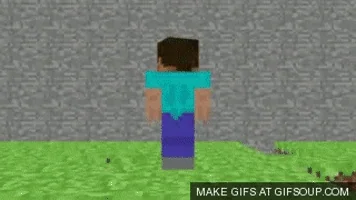

.jpeg)
Herobrine

Secondo le storie e le leggende diffuse dai fan, Herobrine sarebbe una sorta di entità malvagia, simile a un personaggio giocabile (un "player")
ma con caratteristiche inquietanti: ha lo stesso aspetto del protagonista di Minecraft, Steve, ma con gli occhi completamente bianchi, privi di pupille.
La leggenda di Herobrine sembra essere iniziata da un creepypasta, un racconto horror creato dai fan, che descriveva un giocatore
di Minecraft che incontrava questa figura misteriosa all'interno del gioco. Secondo la leggenda, Herobrine appariva in mondi generati
casualmente, costruiva strane strutture come tunnel e piramidi, e si diceva che perseguitasse i giocatori in modo inspiegabile,
distruggendo edifici o spaventando i giocatori.
Herobrine è diventato una vera e propria icona nella cultura di Minecraft, con molti video, fan art, mod (modifiche del gioco)
e racconti che ruotano attorno a lui. Nonostante la sua inesistenza ufficiale, è ancora ampiamente ricordato e celebrato
all'interno della comunità, rappresentando un esempio perfetto di come le leggende metropolitane e i miti possano nascere e
diffondersi all'interno di un ambiente virtuale.
Leggenda
Un giorno, un giocatore di Minecraft iniziò una nuova partita in modalità single-player. All'inizio, tutto sembrava normale:
il mondo generato casualmente, con montagne, foreste e oceani, era esattamente quello che ci si aspettava. Dopo aver esplorato per un po',
però, il giocatore notò qualcosa di strano: in lontananza, tra gli alberi della foresta, c'era una figura che sembrava un altro giocatore.
Aveva l'aspetto di Steve, il personaggio standard di Minecraft, ma c'era qualcosa di diverso in lui... i suoi occhi erano completamente bianchi.
Il giocatore si avvicinò, ma la figura scomparve velocemente tra gli alberi. Confuso e curioso, iniziò a esplorare l'area, ma non trovò
tracce della figura misteriosa. Poco dopo, cominciarono a verificarsi altri strani avvenimenti. Troppo strani per essere solo coincidenze.
Alcuni alberi erano privi di foglie, piccoli tunnel perfettamente rettangolari apparivano sottoterra, e persino delle piramidi di sabbia fluttuanti
si materializzavano nel deserto. Nessuno di questi eventi sembrava avere senso.
Deciso a scoprire di più, il giocatore si recò sui forum di Minecraft per chiedere se qualcun altro avesse sperimentato cose simili. A sorpresa,
il suo post fu eliminato quasi subito. Poco dopo ricevette un messaggio privato da un utente sconosciuto, che gli disse di "smettere di cercare"
e di "non parlare di Herobrine". Il giocatore, sempre più preoccupato, iniziò a fare ricerche più approfondite, trovando pochissime informazioni su Herobrine,
fino a scoprire un vecchio post che affermava che Herobrine era lo spirito del fratello morto di Notch, il creatore di Minecraft.
Secondo questo racconto, Herobrine era una entità malvagia che infestava il codice del gioco, un’anomalia inspiegabile.
Appariva nei mondi dei giocatori per costruire strutture strane, distruggere edifici o spaventare i giocatori con apparizioni fugaci.
Molti giocatori sostenevano di aver visto Herobrine nei loro mondi, descrivendo esperienze simili: strani rumori, mondi corrompenti,
e la presenza costante di quella figura dagli occhi bianchi.
Entity303
Entity 303 è un'altra figura mitologica e spaventosa che emerge dal mondo delle creepypasta di Minecraft,
simile a Herobrine ma con una storia diversa e altrettanto inquietante. Mentre Herobrine è noto per essere una misteriosa
entità dagli occhi bianchi, Entity 303 ha una leggenda che lo collega a un ex dipendente di Mojang, lo studio che sviluppa Minecraft.
Secondo la leggenda, Entity 303 sarebbe stato creato come un'entità vendicativa da un ex sviluppatore di Mojang che era stato licenziato.
Questo ex dipendente, arrabbiato per la perdita del lavoro, avrebbe giurato vendetta contro Mojang e Minecraft stesso.
La storia racconta che avrebbe usato le sue abilità per infiltrarsi nei sistemi del gioco e creare Entity 303, un'entità malvagia
in grado di corrompere i mondi dei giocatori e rovinare la loro esperienza di gioco.
La leggenda di Entity 303 narra di vari giocatori che hanno incontrato strani problemi e glitch all'interno del gioco, come crash
inspiegabili, file corrotti e mondi che scomparivano misteriosamente. Ma il segno più inquietante della sua presenza erano le apparizioni
di una figura oscura, simile a un umanoide, ma con un aspetto sinistro. Entity 303 viene spesso descritto come un personaggio vestito
con un cappuccio nero, con occhi rossi penetranti.
Alcuni giocatori affermano di aver visto scritte inquietanti nei loro mondi di gioco, messaggi come "303 is coming for you"
(303 sta venendo per te) o segni di distruzione inspiegabile nei loro mondi. Altri sostenevano che i loro mondi venissero "hackerati"
da Entity 303, con edifici distrutti e inventari svuotati. Molti giocatori credevano che Entity 303 fosse capace di manipolare il codice
del gioco per corrompere i mondi di Minecraft e terrorizzare i giocatori.
Notch
Markus "Notch" Persson è il creatore di Minecraft e uno dei nomi più importanti nel mondo dei videogiochi. Nato in Svezia nel 1979,
Notch ha fondato Mojang Studios, la casa di sviluppo che ha creato e lanciato Minecraft, uno dei giochi più popolari di tutti i tempi.
Notch è considerato una figura iconica nel settore dei videogiochi per la sua visione e il successo di Minecraft, che ha rivoluzionato
il modo in cui i giochi sandbox vengono concepiti.
Notch è una figura affascinante e a volte misteriosa, tanto che alcune leggende sono emerse attorno a lui, anche all'interno del contesto
del gioco stesso. Queste storie sono per lo più basate su speculazioni e creazioni della community, ma alcune sono state alimentate da
riferimenti o elementi all'interno del gioco.
Leggena n°1
Una delle leggende più celebri legate a Notch è quella che connette Herobrine (la figura misteriosa dagli occhi bianchi) al fratello defunto di Notch.
Secondo la creepypasta di Herobrine, si racconta che Herobrine fosse lo spirito di un fratello di Notch morto prematuramente. Questo spirito,
in qualche modo, avrebbe trovato modo di "infestare" il mondo di Minecraft, apparendo nei mondi dei giocatori e terrorizzandoli.
Notch ha più volte smentito questa storia, dichiarando che non ha mai avuto un fratello, ma la leggenda continua a circolare tra i fan più appassionati del gioco.
La community ha trovato questo collegamento intrigante, alimentando l'idea che Herobrine fosse una sorta di manifestazione oscura legata al creatore del gioco stesso.
Leggena n°2
Un'altra leggenda meno spaventosa, ma più mitica, è quella che dipinge Notch come una sorta di "divinità" del mondo di Minecraft.
Poiché è stato lui a creare l'intero universo di gioco, alcuni fan hanno immaginato che Notch abbia un potere supremo all'interno
del mondo digitale, quasi come se fosse il "dio" di questo universo. Nella community si sono diffusi racconti che descrivono Notch
come colui che controlla ogni cosa dietro le quinte, un'entità che osserva silenziosamente e che, se lo volesse,
potrebbe manipolare i mondi di gioco a suo piacimento. Anche se non esistono riferimenti diretti nel gioco a Notch
come entità divina, è una delle interpretazioni più poetiche del ruolo di creatore che Notch ha avuto per Minecraft.